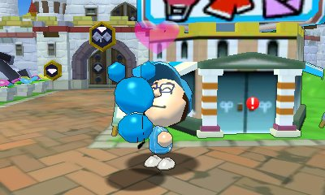
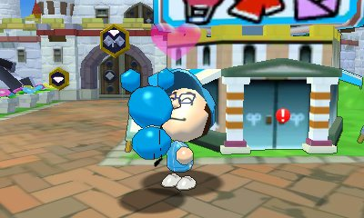

![[ANA JDG] Asterix and the Great Rescue - Megadrive](../vi/6oUXi0ckLmA/default.jpg)
![[ Présentation pour la chaîne Grenier des Joueurs ] JDG Prod](../art/SHAR.6419.583.2.jpg)


Je vais vous parler de l'état islamique en étudiant sur plusieurs axes que voici :
-Les moyens de recrutement,
-Les moyens de financement,
-Le but (causes),
-L'identité des jeunes européens.
En ce qui est de mes sources, je vais devoir employez exclusivement le réseau mondial faute de livre disponible évoquant comme thème l'état islamique dans mon logis.
But (causes)
Le but des Djihadistes est d'obtenir un état où leur chef a une autorité politique et religieuse.
Cette idée vient certainement de la mort de Mohammed qui sépara les musulmans en deux groupes (les Chiites et les Sunnites) qui ont une vision de leur chef chacun.
Les Sunnites sont à la base de cette idée et utilise le petit Jihad (Jihad de conquête) pour créer leur état tout en luttant contre les athées, les chiites et les protestants.
(La source est bien évidemment de mon cours en Sciences Sociales).
Moyens de recrutement
Les Djihadistes contactent leurs « victimes » à travers les médias.
Les réseaux sociaux sont utilisés pour connaître les centres d'intérêt des futures recrues[1].Les Djihadistes jouent surtout avec le malaise identitaire en se mettant les adolescents immigrés dans leurs poches avec leurs idéologies radicales1 .
On peut également se faire endoctriner avec certain article se trouvant sur des sites Djihadistes car ils déforment le point de vue des médias externes et offre une vision plus à leurs avantages.
Exemple : Ils ne meurent pas en tant que terroriste, ils meurent en tant que martyre !
Facebook, Twitter, YouTube,... tous ces sites demeurent les meilleurs outils de propagande servant à diffuser du contenu pour arranger la réalité à leurs sauces. Et ce malgré les efforts de la part de Facebook, Twitter et Google[2].
------------------------------------------------------------------------------------------------------------------------------------------------------
Sources:
[1] Bernard, P. (2014, décembre 11). Comment le djihad recrute de jeunes Européens. Récupéré sur lemonde.fr: http://www.lemonde.fr/europe/article/2014/12/11/comment-le-djihad-recrute-de-jeunes-europeens_4538753_3214.html
[2] lefigaro.fr. (2015, mai 28). Facebook, Google et Twitter se liguent contre le djihadisme en France. Récupéré sur lefigaro.fr: http://www.lefigaro.fr/secteur/high-tech/2015/05/27/32001-20150527ARTFIG00290-facebook-google-et-twitter-se-liguent-contre-le-djihadisme-en-france.php
-----------------------------------------------------------------------------------------------------------------------------------------------------
Bien sur, des publics sont visés d'après un ouvrage nommé « A Course in the Art of Recruiting » :
« les musulmans non religieux (« un vivier sans limite », est-il écrit dans l'ouvrage) ;les jeunes qui habitent loin des villes (« ils ont des dispositions naturelles pour la religion et il est facile et de les convaincre et de les manipuler ») ;les étudiants partis à l'université (« l'université est un lieu d'isolement pour quatre, cinq ou six ans ») ; »[1]
En poussant mes recherches vers des témoignages, j'en ai trouvé un qui met en valeurs le recrutement.
Un jeune musulman français de Paris est partit en Syrie après avoir tout abandonné excepté sa femme et ses deux enfants. D'après lui, c'est les prêches de Ben Laden, visionnés et écoutés sur internet,
et le ras-le-bol de ne pouvoir agir plus pour la communauté musulmane.[2]
Le pire c'est que ce ne sont pas que des habitants de Syrie qui recrutent. J'ai trouvé un article (document) qui nous explique qu'en se faisant pour une jeune fille de 15 ans musulmane pour contacter une autre fille de 16 ans également parisienne qui s'auto-proclame Djihadiste, les journalistes ont réussis à lui soutirer des informations et également à comprendre le système des réseaux sociaux. Cet article s'étend sur le recrutement VIA Facebook et Skype.[3]
-----------------------------------------------------------------------------------------------------------------------------------------------------
Sources
[1] Blevennec, N. L. (2015, Juillet 6). Pour recruter, l'Etat islamique s'inspire-t-il du manuel d'Al Qaeda ? Récupéré sur rue89.nouvelobs.com: http://rue89.nouvelobs.com/2015/07/06/recruter-letat-islamique-sinspire-t-manuel-dal-qaeda-260129
[2] BOITIAUX, C. (2014, novembre 19). "Pourquoi je veux mourir en Syrie" : confession d'un jihadiste français. Récupéré sur france24.com: http://www.france24.com/fr/20140212-pourquoi-je-veux-mourir-syrie-confession-djihadiste-francais-temoignage-martyr
[3] Legrand, S. (2014, novembre 14). DOCUMENT. Jihad : "Si tu veux vraiment partir en Syrie, sois prête à tout", conseille une adolescente. Récupéré sur francetvinfo.fr: http://www.francetvinfo.fr/france/jihadistes-francais/info-francetv-info-jihad-comment-une-jeune-fille-de-16-ans-aide-ses-amies-facebook-a-partir-en-syrie_742665.html
-----------------------------------------------------------------------------------------------------------------------------------------------------
Financement
Les sources de revenus de l'état islamique proviennent du pillage des territoires conquis (dont l'Irak), des rançons pour les otages, du racket et de la saisie de puits de pétrole. Mais ce n'est pas tout car il bénéficie également de dons venant des pays du Golfe, notamment au Koweït. [1]
-----------------------------------------------------------------------------------------------------------------------------------------------------
Sources:
[1] Henderson/boi, M. (2014, octobre 8. Qu'est-ce que l'organisation Etat islamique (EI)? Récupéré sur rts.ch: http://www.rts.ch/info/monde/5920219-la-montee-en-puissance-du-groupe-jihadiste-eiil-au-proche-orient.html
-----------------------------------------------------------------------------------------------------------------------------------------------------
Voici une carte où se trouvent tout les puits de pétrole des Djihadistes.
(J'en compte 11 sur le territoire conquit en marron).
![[Sciences Sociales]l’État Islamique](../5252/79895252/pics/3263005474_1_3_xnVCXCVT.jpg)
(Carte se trouvant sur http://www.voltairenet.org/article184370.html )
Jeunes Européens
D'après ce tableau :
![[Sciences Sociales]l’État Islamique](../5252/79895252/pics/3263005474_1_5_4Zr2JACo.jpg)
(Tableau provenant de http://www.lesoir.be/560552/article/actualite/monde/2014-06-02/ces-europeens-qui-partent-faire-djihad-en-syrie-archive exprimant l'estimation du nombre total de Djihadistes étrangers en Syrie entre 2011 et fin 2013).
On peut extraire l'information comme quoi c'est majoritairement les jeunes entre 20 et 24 ans qui sont touchés par le Djihadisme.
La majorité est également belge, anglaise et française.
D'après une source déjà utilisé (de toute façon, j'en ai assez), les djihadistes ont effectivement focalisés leur recrutement sur les musulmans et les jeunes à la recherche d'une identité (en malaise identitaire).[1]
En ce qui concerne la situation familiale, mon témoignage [2]et mon article[3] ne concordent pas car d'un coté j'ai un père musulman de deux enfants qui gagnaient 3000¤ par mois et de l'autre coté nous avons une jeune fille de 16 ans qui se plaignait juste que ses parents musulmans soient peu pratiquants.
D'après le témoignage[2] et l'article[3], c'est avec conscience qu'ils ne reviendront jamais que les jeunes partent et qu'ils rejettent tout de leurs anciennes vies (exceptés la famille qui est du même avis que le jeune, sinon elle reste au pays d'origine).
Pour trouver le sexe le plus représenté dans les départs en Syrie, je me fie à mon intuition qui me dit que c'est le sexe masculin car les Djihadistes sont tous des hommes (la femme et les enfants sont mis sur le cotés où ils sont nourris, logés,... pendant que le père, ou mari, est en train de faire la guerre).
-----------------------------------------------------------------------------------------------------------------------------------------------------
Sources:
[1] Blevennec, N. L. (2015, Juillet 6). Pour recruter, l'Etat islamique s'inspire-t-il du manuel d'Al Qaeda ? Récupéré sur rue89.nouvelobs.com: http://rue89.nouvelobs.com/2015/07/06/recruter-letat-islamique-sinspire-t-manuel-dal-qaeda-260129
[2] BOITIAUX, C. (2014, novembre 19). "Pourquoi je veux mourir en Syrie" : confession d'un jihadiste français. Récupéré sur france24.com: http://www.france24.com/fr/20140212-pourquoi-je-veux-mourir-syrie-confession-djihadiste-francais-temoignage-martyr
[3] Legrand, S. (2014, novembre 14). DOCUMENT. Jihad : "Si tu veux vraiment partir en Syrie, sois prête à tout", conseille une adolescente. Récupéré sur francetvinfo.fr: http://www.francetvinfo.fr/france/jihadistes-francais/info-francetv-info-jihad-comment-une-jeune-fille-de-16-ans-aide-ses-amies-facebook-a-partir-en-syrie_742665.html
-----------------------------------------------------------------------------------------------------------------------------------------------------
Conclusion
L'État Islamique est assuré en terme de recrutement en se focalisant sur les jeunes et les musulmans mais également financièrement car leurs sources de finances sont nombreuses et ne dépendent pas majoritairement de état extérieur.
Le recrutement est perpétuelle car les jeunes musulmans se « contaminent » entre eux VIA les réseaux sociaux ce qui permet de toucher en masse des personnes qui répondent par la religion musulmane ou l'âge.
Le malaise identitaire est la source du problème car une bonne part des musulmans se sentent mal dans notre société parce que la vision de leur religion ne peut être pratiquée selon leurs convictions
(exemple : port du voile à l'école) mais aussi ne pas être victime de jugement dans la société
(exemple : racisme).
Bibliographie
Bernard, P. (2014, décembre 11). Comment le djihad recrute de jeunes Européens. Récupéré sur lemonde.fr: http://www.lemonde.fr/europe/article/2014/12/11/comment-le-djihad-recrute-de-jeunes-europeens_4538753_3214.html
Blevennec, N. L. (2015, Juillet 6). Pour recruter, l'Etat islamique s'inspire-t-il du manuel d'Al Qaeda ? Récupéré sur rue89.nouvelobs.com: http://rue89.nouvelobs.com/2015/07/06/recruter-letat-islamique-sinspire-t-manuel-dal-qaeda-260129
BOITIAUX, C. (2014, novembre 19). "Pourquoi je veux mourir en Syrie" : confession d'un jihadiste français. Récupéré sur france24.com: http://www.france24.com/fr/20140212-pourquoi-je-veux-mourir-syrie-confession-djihadiste-francais-temoignage-martyr
Henderson/boi, M. (2014, octobre8). Qu'est-ce que l'organisation Etat islamique (EI)? Récupéré sur rts.ch: http://www.rts.ch/info/monde/5920219-la-montee-en-puissance-du-groupe-jihadiste-eiil-au-proche-orient.html
Lallemand, A. (2014, juin 2). Ces Européens qui partent faire le djihad en Syrie : archive. Récupéré sur lesoir.be: http://www.lesoir.be/560552/article/actualite/monde/2014-06-02/ces-europeens-qui-partent-faire-djihad-en-syrie-archive
Le Monde.fr. (2014, septembre 26). Origine, nombre, financement... l'Etat islamique en cinq questions. Récupéré sur Le Monde.fr: http://www.lemonde.fr/proche-orient/article/2014/09/15/origine-nombre-financement-l-etat-islamique-en-cinq-questions_4487306_3218.html
lefigaro.fr. (2015, mai 28). Facebook, Google et Twitter se liguent contre le djihadisme en France. Récupéré sur lefigaro.fr: http://www.lefigaro.fr/secteur/high-tech/2015/05/27/32001-20150527ARTFIG00290-facebook-google-et-twitter-se-liguent-contre-le-djihadisme-en-france.php
Legrand, S. (2014, novembre 14). DOCUMENT. Jihad : "Si tu veux vraiment partir en Syrie, sois prête à tout", conseille une adolescente. Récupéré sur francetvinfo.fr: http://www.francetvinfo.fr/france/jihadistes-francais/info-francetv-info-jihad-comment-une-jeune-fille-de-16-ans-aide-ses-amies-facebook-a-partir-en-syrie_742665.html
Meyssan, T. (2014, juin 23). Jihadisme et industrie pétrolière. Récupéré sur voltairenet.org: http://www.voltairenet.org/article184370.html


![[Jeux-Vidéos]Pokémon Rumble World](../5252/79895252/pics/3250201136_1_3_7NDJqn9B.jpg)
![[Jeux-Vidéos]Pokémon Rumble World](../5252/79895252/pics/3250201136_1_5_WBBCg8vi.jpg) 
![[Jeux-Vidéos]Pokémon Rumble World](../5252/79895252/pics/3250201136_1_9_zHHsOjUN.jpg)
![[Jeux-Vidéos]Pokémon Rumble World](../5252/79895252/pics/3250201136_1_11_kVeJveb3.jpg)
![[Jeux-Vidéos]Pokémon Rumble World](../5252/79895252/pics/3250201136_1_13_DU9MXEbl.jpg)
![[Jeux-Vidéos]Pokémon Rumble World](../5252/79895252/pics/3250201136_1_15_uD28LAS0.jpg)
![[Jeux-Vidéos]Pokémon Rumble World](../5252/79895252/pics/3250201136_1_17_2PpEq9A1.jpg)


![[Fan-Art]boredguy8](../5252/79895252/pics/3244166810_1_3_ln6GXNIb.jpg)
![[Fan-Art]boredguy8](../5252/79895252/pics/3244166810_1_5_wyYGEGNk.jpg)
![[Fan-Art]boredguy8](../5252/79895252/pics/3244166810_1_7_gjk2P8ka.png)
![[Fan-Art]boredguy8](../5252/79895252/pics/3244166810_1_9_5dGcPdWw.jpg)

![[Arche de Glin]Le pigeonneau!!!](../5252/79895252/pics/3227447443_1_2_vimJ8RHw.jpg)


![[La Belle et la Bête]Bad Ending!](../5252/79895252/pics/3216487855_1_4_47HMCrb2.jpg)


![[Synthèse Anglaise]TOUS LES TEMPS EN ANGLAIS !!!](../5252/79895252/pics/3214323055_1_4_yferZkUd.jpg)


{kind=link}
Partage